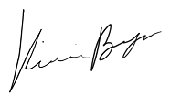

Kira Boyer Born in 1997 Lives in San Jose, CA, USA
Kira Boyer began creating digital art in high school. In 2015 she enrolled at San Jose State University where she is now studying the interdisciplinary Digital Media Art program. She is the former President of the CADRE Student Organization at San Jose State where she has participated in events such as Makerfaire (2018) and Gamer Gala (2018). 3D modeling, photography and physical computing are her true passions, but Kira is also interested in projection mapping, videography, graphic art, sculture, prop-making, VR, AR, creative coding, and screen-printing.

Education
2015- Pending San Jose State University, San Jose, CA/ BFA
Digital Media Art
Group Exhibitions and Projects
2019-
Art 151 Class Show, Gallery 8, SJSU, San Jose, CA
2019-
Art 107 Class Show, Gallery 5, SJSU, San Jose, CA
2018-
Campfires, Vampires, Crime Scenes, Bees, and More, Black Gallery, SJSU, San Jose, CA
2018-
Gamer Gala, SJSU, San Jose, CA (in collaboration with
the CADRE Student Organization)
2018-
CADREzone, San Jose State University, San Jose, CA
(project management in collaboration wit the CADRE Student Organization)
2018 -Conditional Mood Sensor Compatibility Bracelets,
Makerfaire 2018, San Mateo, CA (in collaboration with Thanh Truong)
2017 -Strawberry Virtual Reality, Campus Movie Fest, San
Jose, CA
(performance, special effects, and directing in collaboration with Kevin Minh Nguyen, Aldo Mora-Reyna, Zainib Ahmed, and Tom Lin)